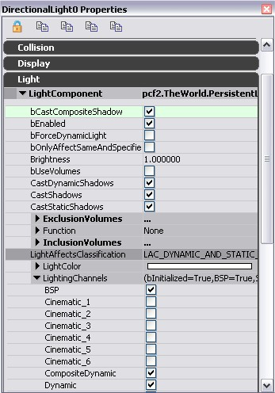
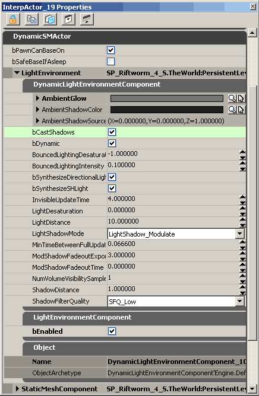

UDN
Search public documentation:
LightEnvironments
日本語訳
中国翻译
한국어
Interested in the Unreal Engine?
Visit the Unreal Technology site.
Looking for jobs and company info?
Check out the Epic games site.
Questions about support via UDN?
Contact the UDN Staff
中国翻译
한국어
Interested in the Unreal Engine?
Visit the Unreal Technology site.
Looking for jobs and company info?
Check out the Epic games site.
Questions about support via UDN?
Contact the UDN Staff
UE3 Home > Lighting & Shadows > Light Environments
UE3 Home > Level Designer > Light Environments
UE3 Home > Lighting Artist > Light Environments
UE3 Home > Level Designer > Light Environments
UE3 Home > Lighting Artist > Light Environments
Light Environments
Document Changelog: Created by Daniel Wright.
Overview
Why Light Environments are Needed
How Light Environments Work
Settings
Light
These are the relevant settings available to each light:
bCastCompositeShadow
For a light to affect the shadow direction it must have bCastCompositeShadow=True. The default is true for all light types; prior to Epic changelist 208754 it was false by default on point lights and spot lights. For lights with this set to false they will be used to affect the light environment's composite lighting but not its composite shadow. bCastCompositeShadow also controls whether non-light-mapped lights are affected by modulated shadows; a dynamic light with bCastCompositeShadow=False won't be affected by modulated shadows from any light. bCastCompositeShadow is ignored on light-mapped lights, since the light will be rendered as part of the composite light-map; all light-mapped lights are affected by modulated shadows.CompositeDynamic channel
All lights are in the CompositeDynamic channel by default, however you still need to have lights in the dynamic lighting channel if you have any primitives which don't use the composite light environment. Note that the CompositeDynamic channel is a separate flag from the Dynamic lighting channel as an optimization. There will typically be many lights that are CompositeDynamic but not Dynamic, and lights in the Dynamic lighting channel need to be checked for relevance whenever a primitive is reattached to the scene.Primitive's LightEnvironment
These are the settings available in the LightEnvironment, which can be set on SkeletalMeshActors for example. DynamicLightEnvironmentComponent
- AmbientGlow - Ambient color added in addition to the level's lighting.
- AmbientShadowColor - The color of the ambient shadow.
- AmbientShadowSourceDirection - The direction of the ambient shadow source.
- bCastShadows - Whether the light environment should cast shadows
- bDynamic - Whether the light environment should be dynamically updated.
- bFreeze - Whether the light environment state should be frozen. (This property is no longer editable in newer builds.)
- BouncedLightingIntensity - The intensity of the simulated bounced light, as a fraction of the direct incident lighting.
- BouncedLightingDesaturation - The desaturation blend to apply to the simulated bounced light. Typically this will be negative to make the bounced lighting more saturated.
- bSynthesizeDirectionalLight - Whether a directional light should be used to synthesize the dominant lighting in the environment.
- bSynthesizeSHLight - Whether a spherical harmonic light should be used to synthesize all light not accounted for by the synthesized directional light. If not, a sky light is used instead.
- InvisibleUpdateTime - The number of seconds between light environment updates for actors which aren't visible.
- LightDesaturation - Desaturation percentage of level lighting, which can be used to help team colored characters stand out better under colored lighting.
- LightDistance - The distance to create the light from the owner's origin, in radius units.
- LightShadowMode - Type of shadowing to apply for the light.
- MinTimeBetweenFullUpdates - Minimum amount of time that needs to pass between full environment updates.
- ModShadowFadeoutExponent - Exponent that controls mod shadow fadeout curve.
- ModShadowFadeoutTime - Time since the caster was last visible at which the mod shadow will fade out completely.
- NumVolumeVisibilitySamples - The number of visibility samples to use within the primitive's bounding volume.
- ShadowDistance - The distance for the shadow to project beyond the owner's origin, in radius units.
- ShadowFilterQuality - Quality of shadow buffer filtering to use on the light environment
LightEnvironmentComponent
- bEnabled - Enables the LightEnvironmentComponent. When the LightEnvironmentComponent is enabled, the DynamicLightEnvironment treats the primitives that are in the Dynamic lighting channel as being in the CompositeDynamic lighting channel instead. The dynamic channel is unique in this regard, no other channels are reinterpreted by the DynamicLightEnvironmentComponent.